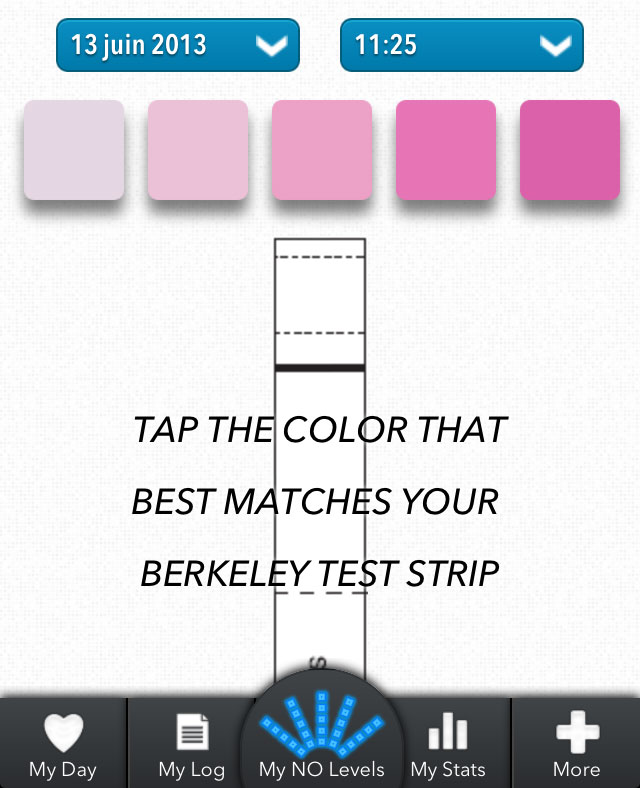

- 
1. Measure your Nitric Oxide levels with a Berkeley Test strip and enter the value in the app.
2. Enter any Nitric Oxide-rich food you ate up to 4 hours before your NO measurement.
3. Save your measurement.
You are done!
4. Track your measurements day after day.
5. Analyze your results and find out how your eating habits impact on your NO levels.
- 1
- 2
- 3
- 4
- 5
- 6
Berkeley Test® is an easy and affordable way to check your Nitric Oxide status throughout the day
Nitric oxide, or NO, for short, is produced in our body, naturally. In 1998, the Nobel Prize for medicine was awarded for the discovery of the important role of Nitric Oxide in our cardiovascular system.
Elevated levels of Nitric Oxide:
* increases athletic performance and endurance
* improves cardiovascular health
* protects blood vessels from vascular ageing
Using saliva, the Berkeley Test® monitors your body's Nitric Oxide status throughout the day. By tracking your saliva Nitric Oxide levels multiple times a day with the Berkeley Test®, you can make immediate and real-time dietary lifestyle adjustments.
Daily consumption of leafy greens, such as Spinach, Arugula, Beetroots, among other Nitric Oxide rich vegetables and fruits is the safest and healthiest way to elevate your natural Nitric Oxide levels.
-
E-mail:
-
Password:
-
Please enter your user e-mail
and we will send your password.
-
E-mail:
| MEAL | Measurements | Avg. level | |
| MEASUREMENT | 0 | - |
| Mon | Tue | Wed | Thu | Fri | Sat | Sun |
- no measurements
| Mon | Tue | Wed | Thu | Fri | Sat | Sun |
-
NOTIFICATIONS
-
E-mail:
-
Password:
-
Year of birth:
-
Gender:
-
Weight:
-
Blood pressure status:
-
Physical activity:
| VERY HIGH |
Arugula Bok Choy Spinach Lettuce Swiss Chard Celery |
| HIGH |
Beetroots Chinese cabbage Radish Endive Mustard leaf Fennel |
| MEDIUM |
Turnips Green Beans Cabbage Leeks Kale |
| LOW |
Carrots Broccoli Cucumber Cauliflower Potato |
| VERY LOW |
Onions Garlic Tomato Asparagus Brussels sprouts Peas Pepper |
The list of vegetables is a partial list of some common vegetables from HIGH to LOW Nitric Oxide richness or potency. We welcome your suggestions. Please let us know your favorite Nitric Oxide potent foods at info@berkeleytest.com.
Our classification is based on the precursor of Nitrate Oxide found within a specific vegetable. To help you better understand Nitric Oxide rich foods, 'My Stats' will calculate the relative amount you ate in context to your Nitric Oxide status after a meal.
On one end of the strip is the saliva absorption pad ("saliva here") that collects saliva from your your tongue. The other end is the NO test pad (as highlighted by the dark line).
- Place the collection pad ("saliva here") on your tongue for 3-5 seconds to collect saliva.
- Remove the strip from your mouth and fold the two ends of the strip together.
- Gently press the absorption pad against the NO test pad for 3-5 seconds to transfer the saliva.
- After pressing together for 2-3 seconds, release and watch the test pad change color within 45 seconds.
- On the outside of the canister for Saliva NO Test Strips a color chart is found. Compare you NO test strip to the color chart to read your Nitric Oxide Level.
To ensure vascular fitness, you can now self-check your Nitric Oxide status. Berkeley Test® is the first saliva test to monitor your Nitric Oxide levels in context of your dietary patterns of Nitric Oxide-rich natural whole foods.
To learn more about Nitric Oxide potent or rich foods go to www.berkeleytest.com.
Why do I want to measure saliva Nitric Oxide?
Nitric Oxide is a short-lived, naturally-occurring molecule that regulates cardiovascular activity. Elevated levels of NO can lower cardiovascular risk and increase athletic performance. Nitric Oxide can be elevated with diets, such as the, DASH and Mediterranean diets, loaded with vegetables rich in leafy greens.
When should I use the Test Strips? How often should I measure my saliva Nitric Oxide levels?
It is best to get a measurement as soon as you get out of bed and take another reading 1-3 hours after you eat. Record the Nitric Oxide level and track your levels on your Cardio Diet Tracker. My Stats will provide insights as to what foods increase Nitric Oxide levels and for how long.
What happens to my saliva levels several hours after a Nitric Oxide rich meal?
Nitric Oxide levels rise and fall throughout the day. Typically, levels peak within 2-3 hours after a Nitric Oxide-rich leafy green salad. By 6-12 hours levels begin to fall, unless you consume additional Nitric Oxide-rich vegetables.
Who should use the Nitric Oxide Test Strip and Cardio Diet Tracker by Berkeley Test?
This app and test strip is intended for individuals wanting to stay healthy. It is to remind you to eat a balanced diet rich in leafy greens and colorful vegetables. It is not intended to diagnose, cure, mitigate, treat, or prevent cardiovascular disease. Instead, Saliva Nitric Oxide Strips promotes a healthy lifestyle to keep us fit, energized and disease fighting.
My Day |
My Log |
My Stats |
More |